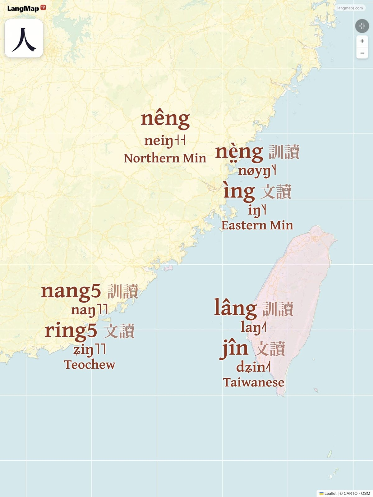

Sinosphere · · revised · Facebook post
Same Character, Two Pronunciations: Literary and Colloquial Min
- In Southern Min, many characters have two living pronunciations, a literary one and a colloquial one.
- 生 is sing or senn, 大 is tāi or tuā, 八 is pat or peh, and the word decides which.
- It looks like Japanese on'yomi and kun'yomi, but the two systems tell very different stories.

Contents
Two readings, both alive
The same character, two completely different pronunciations, both still alive.
Southern Min (閩南語), including Hokkien and Taiwanese, is famous for its system of literary readings (文讀) and colloquial readings (白讀).
Take 生.
Literary (文讀): sing
Colloquial (白讀): senn / sinn
Or 大.
Literary (文讀): tāi
Colloquial (白讀): tuā
Or 八.
Literary (文讀): pat
Colloquial (白讀): peh
Or 十, where both the initial consonant and the vowel differ.
Literary (文讀): si̍p
Colloquial (白讀): tsa̍p
The word decides
These are not simply alternative pronunciations that speakers can swap at will.
The colloquial readings (白讀) belong mainly to everyday inherited vocabulary. The literary readings (文讀) are associated more strongly with reading traditions, education and learned vocabulary.
Which one you use often depends on the word.
流 is a good example.
流汗 "to sweat" uses the colloquial reading:
lâu-kuānn
流浪 "to wander" uses the literary one:
liû-lōng
Both systems remain active in the same language, sometimes inside a single word. Counting to eleven gives tsa̍p-it: colloquial tsa̍p for 十, literary it for 一.
Speakers do not work this out; they absorb it. Getting it wrong marks someone as a learner.
Doesn't Japanese do the same?
If you know Japanese, this may look familiar.
Japanese characters also have two broad kinds of readings:
音読み on'yomi: readings derived historically from Chinese
訓読み kun'yomi: native Japanese words attached to characters by meaning
So 山 can be san in 山脈 sanmyaku "mountain range," but yama when 山 itself means "mountain."
At first glance, this looks a lot like Southern Min 文讀 and 白讀.
But there is a crucial difference.
Japanese yama was already a Japanese word meaning "mountain." The character 山 was attached to it by meaning.
A Southern Min 白讀 is not a native non-Chinese word substituted for the character. It belongs to an older spoken layer of Chinese itself.
So Japanese 音読み and 訓読み represent two different linguistic sources.
Southern Min 文讀 and 白讀 represent different historical layers within the same Sinitic language.
Layers that run deep
And historically, those layers run deep.
Northern settlers brought Chinese into Fujian in waves. The oldest colloquial vocabulary is usually traced to the Han dynasty (206 BC – AD 220), a second layer to the Northern and Southern Dynasties. The literary layer arrived later, in the Tang dynasty (618–907), modelled on the prestige speech of the capital, Chang'an.
The literary layer corresponds relatively neatly to the medieval Chinese tradition represented by rhyme books such as the Qieyun (切韻).
But some of the oldest colloquial Min forms do not.
They preserve distinctions that point to earlier stages of Chinese, in some cases to layers associated with the Han period (漢代), before the Middle Chinese (中古漢語) rhyme-book system had fully taken shape.
You can hear it in the consonants. Old Chinese had no f, and the colloquial layer often keeps an older p-: 飛 "fly" is colloquial pue but literary hui, against Mandarin fēi. Where Mandarin has zh- or ch-, Min often keeps a plain t-: 豬 ti "pig," 茶 tê "tea." That Amoy tê, carried to Europe by Dutch traders, is where the English word tea comes from.
That is one reason Min (閩語) occupies such an unusual position within Sinitic (漢語族). The linguist Jerry Norman argued that it is the one major dialect group that cannot be derived entirely from the Middle Chinese of the rhyme books.
Underneath its later literary readings (文讀), it preserves an older spoken layer that the medieval rhyme books cannot fully explain.
Two stories behind one look
Min Nan is not alone in having two layers; Wu, Hakka and Cantonese also layer literary readings over colloquial ones. What sets Min apart is the depth of its colloquial stratum.
Same character, multiple readings.
Japan got there by pairing Chinese readings with native Japanese words.
Southern Min got there by preserving different historical layers of Chinese pronunciation.
They look surprisingly similar on the surface, but they tell two very different linguistic stories.